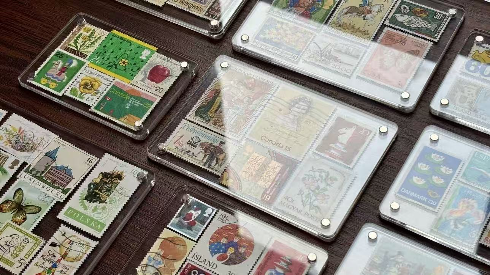
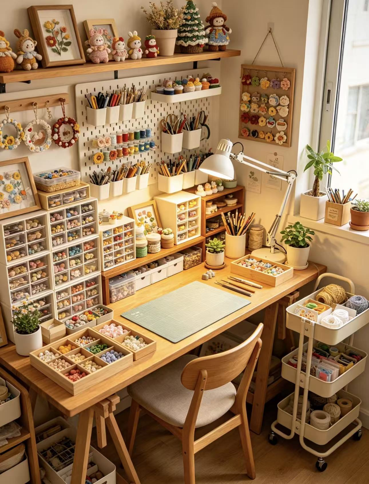
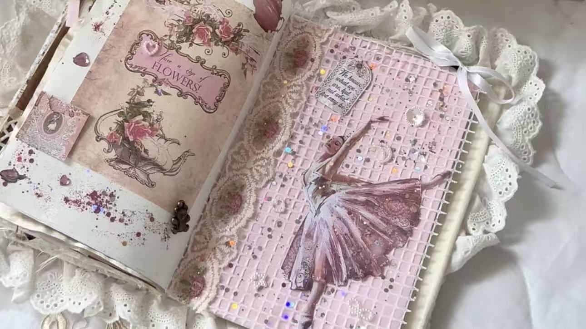
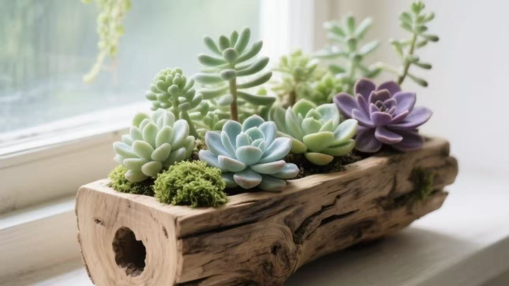
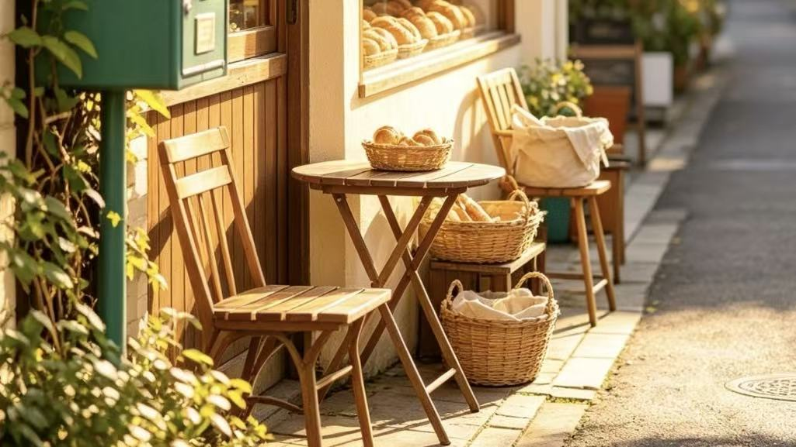
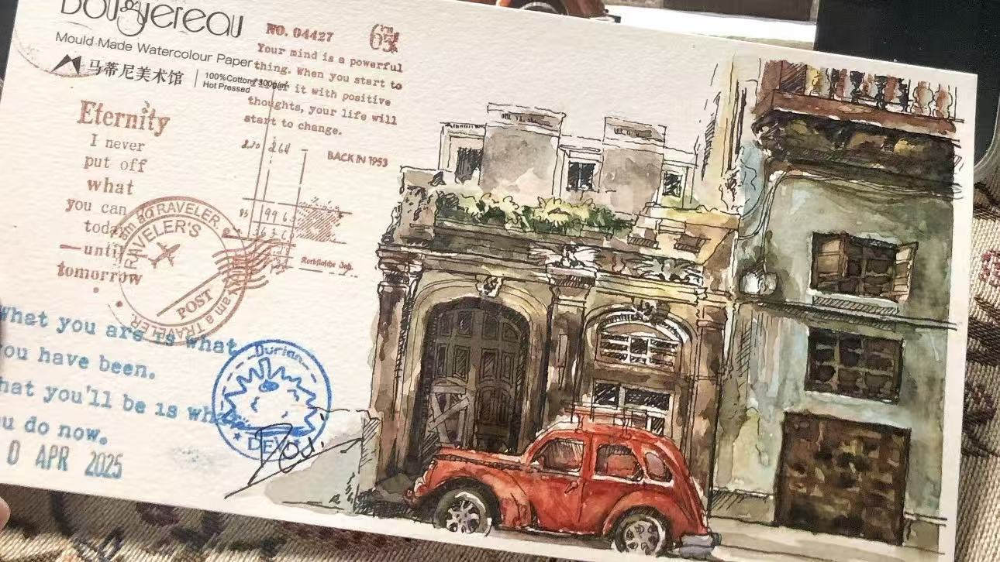

01 / GATHERA LITTLE PERSONAL ARCHIVE
The Tiny Museum
Build a home for the little things you love: a favorite song, a postcard, a recipe, or a very specific kind of cloud. Give each one a story.

SOMETHING TO MAKE
Five friendly ideas for your next creative afternoon. Keep them simple, follow the interesting bits, and see where you end up.

01 / GATHERA LITTLE PERSONAL ARCHIVE
Build a home for the little things you love: a favorite song, a postcard, a recipe, or a very specific kind of cloud. Give each one a story.

02 / NOTICEA DAILY MOMENT OF CALM
Create a cheerful little journal that saves one good thing from each day. Add a date, a sentence, and a view of all the small joys piling up.

03 / GROWA GENTLE GARDEN COMPANION
Make a playful plant-care dashboard for your windowsill. Track watering days, name your leafy roommates, and celebrate every new little leaf.

04 / EXPLOREA MAP OF YOUR EVERYDAY
Collect the places that make your neighborhood feel like yours: the good bench, the bakery with a friendly dog, or the street with the best trees.

05 / SHAREA NOTE FROM SOMEWHERE
Design a tiny digital postcard that lets you pair a photo with a note. Send a little hello to a friend—or leave one for a stranger to find.
The best project is the one you’re excited to open again tomorrow.